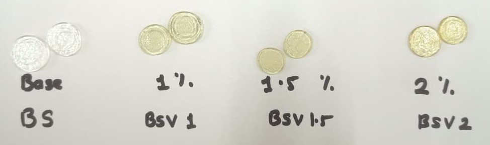
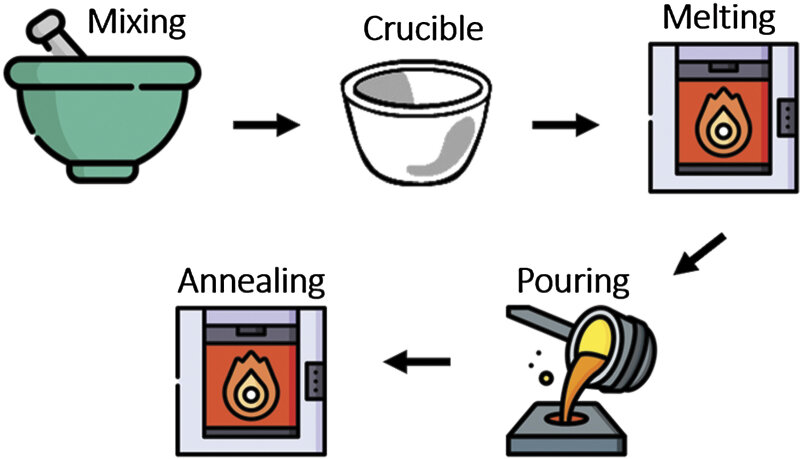
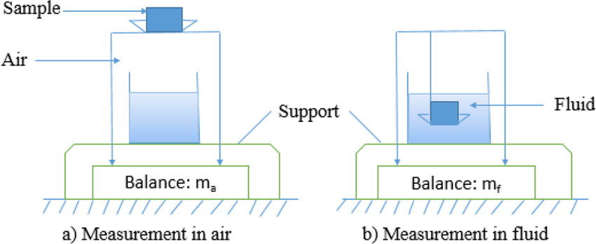
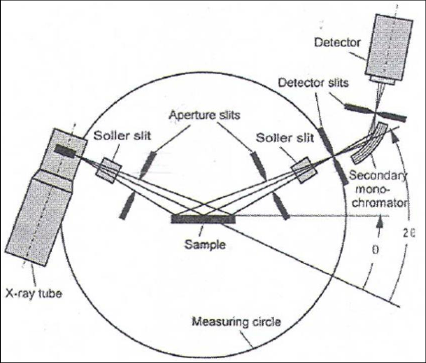
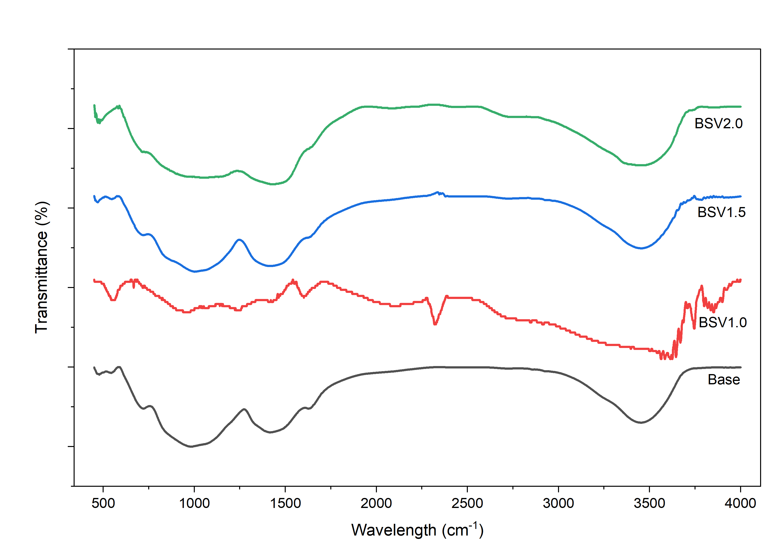

National Institute of Technology Karnataka, Surathkal
Department of PhysicsSynthesis and Characterization of V₂O₅-Doped Sodium Borosilicate Glass
Research Team


Abstract
This study investigates the influence of vanadium pentoxide (V₂O₅) doping on the physical properties of a 35SiO₂–30B₂O₃–(35–x)Na₂O–xV₂O₅ glass system, where $x = 0$, 1.0, 1.5, and 2.0 mol%. Glass samples were prepared using the conventional melt-quenching technique, and their densities were measured using Archimedes’ principle.
XRD patterns confirmed the amorphous nature of all samples, while FTIR spectra revealed characteristic vibrations associated with Si–O–Si, borate units (BO₃/BO₄), and vanadate structural groups (VO₄/VO₅). UV-Vis spectroscopy demonstrated that vanadium addition modifies the optical absorption edge and introduces a broad visible absorption tail, consistent with mixed-valence vanadium species. The results suggest a concentration-dependent structural role for V₂O₅, involving both vanadate network formation and local rearrangement of the borosilicate host matrix.
Theoretical Background
The study of oxide glasses centers on understanding their disordered, yet highly structured local environments. In a complex multi-former system, different chemical constituents adopt specialized structural roles.
Roles of Oxides in Glass
Oxides are traditionally categorized based on their roles in shaping the randomized continuous network:
- Network Formers (e.g., SiO₂, B₂O₃): Oxides that can independently form rigid, highly cross-linked three-dimensional networks built by corners-sharing polyhedra.
- Network Modifiers (e.g., Na₂O): Ionic oxides that do not form networks but break bridging oxygen (BO) bonds, introducing Non-Bridging Oxygens (NBOs) to depolymerize the network, reducing viscosity and melting point.
- Intermediate Oxides (e.g., V₂O₅): Versatile oxides that act as formers or modifiers depending on concentration and basicity. Vanadium ions can occupy multiple coordination environments (tetrahedral VO₄ or pyramidal VO₅).
 representation of the silica random network built by SiO4 tetrahedra.png) Fig 2.1: Zachariasen's random network model of a glass (b) contrasted with its ordered, crystalline counterpart (a).
Fig 2.1: Zachariasen's random network model of a glass (b) contrasted with its ordered, crystalline counterpart (a).
 Structure of crystalline B2O3 formed by BO3 triangles and (b) boroxol uni.png) Fig 2.2: Structure of boron trioxide: (a) BO₃ triangles, (b) boroxol rings, the building blocks of vitreous B₂O₃.
Fig 2.2: Structure of boron trioxide: (a) BO₃ triangles, (b) boroxol rings, the building blocks of vitreous B₂O₃.
The Borate Anomaly & Network Modifiers
In silicates, adding Na₂O immediately breaks bonds and makes the structure looser. However, in borates, adding small amounts of Na₂O converts trigonal BO₃ units into rigid tetrahedral BO₄ units, which increases network connectivity. This phenomenon is known as the Borate Anomaly.
In sodium borosilicate glasses, Na⁺ ions play a double role: charge-balancing BO₄⁻ tetrahedra and creating NBOs on silicate units. The introduction of V₂O₅ creates a complex, competing mixed-former environment governed by the Mixed Glass Former Effect (MGFE).
Interactive Glass Doping Simulator
Use the concentration slider to simulate the additions of V₂O₅ ($x$ mol%) into the sodium borosilicate matrix. Observe the visual changes in the glass samples and trace how the physical properties update dynamically according to experimental data.

Clean, colorless glass network without dopants. Serves as reference host.
Synthesis & Experimental Methodology
The glasses were prepared using the conventional high-temperature melt-quenching technique in the Material Processing Laboratory at the Department of Physics, NITK Surathkal.
Synthesis Workflow
1. Calcination
Stoichiometric amounts of H₃BO₃ and Na₂CO₃ calcined in muffle furnace at 400°C for 2 hours to eliminate moisture and CO₂ gas.
2. Grinding & Mixing
Calcined borates ground with high-purity SiO₂ and V₂O₅ powders in an agate mortar for 30 minutes to form a homogeneous precursor batch.
3. High-Temp Melting
Precursor melted in an alumina crucible using a muffle furnace at 1150°C for 30 minutes to ensure a completely bubble-free, molten oxide liquid.
4. Pouring & Annealing
Poured onto a pre-heated stainless steel mould, pressed to form discs, and annealed at 350°C for 2 hours to relieve internal stresses.
Batch Calculation & Stoichiometry
Reagent weight calculations represent volatile loss of carbonate and acid forms (yielding B₂O₃ and Na₂O respectively). Table 3.1 details the calculations for a total batch size of 10 g.
| Sample Code | SiO₂ (g) | H₃BO₃ (g) | Na₂CO₃ (g) | V₂O₅ (g) |
|---|---|---|---|---|
| BS (0%) | 3.410 | 5.825 | 5.831 | -- |
| BSV1 (1.0%) | 3.245 | 5.722 | 5.562 | 0.281 |
| BSV1.5 (1.5%) | 3.215 | 5.672 | 5.425 | 0.417 |
| BSV2 (2.0%) | 3.186 | 5.621 | 5.288 | 0.550 |
 Fig 3.1: High-purity starting chemicals utilized in the synthesis of doped borosilicate glasses.
Fig 3.1: High-purity starting chemicals utilized in the synthesis of doped borosilicate glasses.
Melt-Quenching Synthesis Process
The conventional high-temperature melt-quenching method was employed for the synthesis. The process consists of a sequence of thermal and mechanical stages designed to yield completely uniform, amorphous solid matrices:
- Calcination Stage: Heating starting chemicals like $\text{H}_3\text{BO}_3$ and $\text{Na}_2\text{CO}_3$ at 400°C to release volatile water vapor and carbon dioxide.
- Agate Mortar Homogenization: Grinding the calcined borate components together with pure $\text{SiO}_2$ and dopant $\text{V}_2\text{O}_5$ for 30 minutes to establish an extremely homogenous precursor mix.
- High-Temperature Fusion: Melting the batch in a high-purity alumina crucible in a muffle furnace at 1150°C for 30 minutes. This thermal treatment produces a bubble-free, low-viscosity liquid oxide melt.
- Quenching & Relieving Stress: Casting the fluid melt onto a mirror-smooth stainless steel mold preheated to 300°C, and then rapidly transferring the solidified discs to an annealing furnace at 350°C for 2 hours. This thermal treatment relieves all mechanical stress to prevent fractures.

Fig 3.2: Schematic flowchart representing the high-temperature melt-quenching glass preparation steps.
Fig 3.3: Schematic setup for density determination of glass samples via Archimedes' liquid displacement technique.Density Measurement via Archimedes' Principle
To trace structural changes and density alterations in the glass network, experimental densities ($\rho$) were determined using liquid displacement based on Archimedes' principle at room temperature.
The samples were weighed in air ($W_a$) and then submerged in a high-purity immersion liquid ($W_l$) of known density. o-Xylene ($\text{C}_8\text{H}_{10}$) was selected as the immersion medium due to its extremely low water absorption and stable density ($\rho_l = 0.86 \text{ g/cm}^3$ at 25°C).
The experimental density is calculated using the relation:
Once density is established, the Molar Volume ($V_m$), Oxygen Packing Density (OPD), and Oxygen Molar Volume ($V_o$) are computed as follows:
Where $M$ is the formula weight and $n_O$ is the number of oxygen atoms in the chemical formula unit.
Phase, Structural & Optical Characterization Suite
1. Phase Confirmation via X-Ray Powder Diffraction (XRD)
To confirm that the prepared glass samples were completely amorphous and free of any micro-crystalline or phase-separated domains, X-Ray Powder Diffraction (XRD) was carried out.
Measurements were conducted using a benchtop Rigaku MiniFlex 600 diffractometer equipped with a $\text{Cu K}\alpha$ radiation source ($\lambda = 1.5418$ Å). Diffractograms were recorded in the scan range of $2\theta = 10^\circ \text{ to } 80^\circ$ at a step size of $0.02^\circ$. Bragg's law conditions govern the peak formation:
For amorphous glasses, the absence of periodic lattice planes prevents constructive interference, resulting in broad diffusion features (amorphous halos) instead of sharp Bragg diffraction peaks.

(a) Bragg Scattering Path (a) Michelson Interferometer
(a) Michelson Interferometer

(b) Experimental IR Spectra2. Vibrational Fingerprinting via FTIR Spectroscopy
The local atomic structure and coordination environments of the glass networks were probed using Fourier Transform Infrared (FTIR) Spectroscopy.
FTIR mid-IR spectra were collected using a high-precision spectrometer in the wavenumber range of 400 to 4000 cm⁻¹. Measurements were carried out using an Attenuated Total Reflectance (ATR) accessory. Infrared absorption bands arise from localized vibrational modes, allowing us to trace the coordination of boron (trigonal $\text{BO}_3$ vs tetrahedral $\text{BO}_4$ units), silica linkages ($\text{Si-O-Si}$ bending and stretching), and the network-forming/modifying roles of vanadium polyhedra ($\text{VO}_4/\text{VO}_5$).
3. Electronic Transitions & Bandgap via UV-Vis Spectroscopy
To analyze the optical transparency, the absorption edge, and electronic transitions inside the glasses, UV-Vis Spectrophotometry was employed.
Optical absorption spectra were recorded in the ultraviolet and visible wavelength range of 190 to 900 nm using a high-resolution double-beam spectrophotometer. The absorption coefficient ($\alpha$) is calculated from absorbance data, and the optical bandgap ($E_g$) is evaluated using Tauc's relation for indirect allowed transitions:
Plotting $(\alpha h\nu)^{1/2}$ versus photon energy ($h\nu$) and extrapolating the linear region of the absorption edge to the energy axis yields the indirect optical bandgap.
 (a) Double-Beam Optical Bench
(a) Double-Beam Optical Bench


Experimental Results & Characterization
Toggle through the tabs to investigate key structural and optical measurements gathered from your synthesized glasses.
Visual Analysis of Glass Discs
Photograph in Fig 4.1 shows the successfully prepared glass discs. The base glass is completely colorless and glass-transparent. Adding V₂O₅ imparts a distinct amber and yellowish-brown tint that deepens with dopant concentration (x = 1.0, 1.5, 2.0 mol%).
All prepared samples exhibit notable homogeneity, mirror-smooth surfaces, and high transparency, confirming the complete absence of phase separation or micro-crystallization.
X-Ray Powder Diffraction
The structural status of the synthesized glasses was tested using Rigaku XRD analysis. XRD patterns for both the base and doped glasses show a lack of sharp diffraction peaks.
Instead, all samples show a wide, broad diffusion halo centered around $2\theta = 20^\circ - 35^\circ$. This broad halo is a signature of the long-range atomic disorder and amorphous solid structure of the borosilicate matrix, confirming excellent glass formation across the entire doping range.
.jpg)
.jpg)
.jpg)
.jpg)
FTIR Structural Fingerprint
FTIR mid-IR spectra (400-4000 cm⁻¹) probe the local network configurations of our sodium borosilicate glasses. The principal absorption bands reveal three major structural vibrational zones:
- 450 - 600 cm⁻¹: Bending vibrations of Si–O–Si and Si–O–B linkages, coupled with low-frequency bridging modes from V–O–V bending vibrations (~525 cm⁻¹).
- 800 - 1150 cm⁻¹: The most intense envelope, comprising overlapping Si–O–Si asymmetric stretching (shoulder at ~1100 cm⁻¹) and tetrahedral stretching of BO₄⁻ (minimum at ~988 cm⁻¹) and VO₄ units.
- 1200 - 1500 cm⁻¹: Vibrations from asymmetric B–O stretching in trigonal BO₃ units (peaks around ~1460 cm⁻¹).
The addition of V₂O₅ introduces localized changes. In particular, the emergence of vanadyl (V=O) stretching at ~936 cm⁻¹ and V–O–V bending at ~525 cm⁻¹ confirms vanadium's incorporation. The shift of the BO₃ asymmetric stretch (~1460 → 1421 cm⁻¹) and BO₄ stretch (~988 → 1003 cm⁻¹) verifies structural modifications, where Na₂O and V₂O₅ act in concert to induce BO₄ → BO₃ speciation changes (back-conversion of boron coordination).
Table 4.2: Digitized FTIR Transmittance Values vs. Wavenumber
Representative excerpt of digitized data points extracted across the key absorption zones for all compositions.
| Wavenumber (cm⁻¹) | Base Glass %T | BSV1.0 %T | BSV1.5 %T | BSV2.0 %T |
|---|---|---|---|---|
| 4000 | 29.26% | 1.06% | 22.84% | 2.15% |
| 3452 (O–H stretch) | 19.95% | 0.72% | 15.19% | 0.85% |
| 2934 | 28.61% | 1.01% | 22.29% | 2.09% |
| 1628 (H–O–H bend) | 22.33% | 1.05% | 16.76% | 2.08% |
| 1460 (BO₃ asymmetric) | 18.60% | 0.96% | 12.76% | 1.00% |
| 1300 | 21.26% | 0.99% | 14.69% | 1.02% |
| 1100 (Si–O–Si stretch) | 16.92% | 0.98% | 12.53% | 0.96% |
| 988 (BO₄ stretch) | 15.92% | 0.94% | 11.83% | 1.03% |
| 800 (Si–O–Si bend) | 20.71% | 0.98% | 15.60% | 1.00% |
| 686 (B–O–B bend) | 23.34% | 1.04% | 17.84% | 0.99% |
| 525 (V–O–V bend) | 28.51% | 0.67% | 22.71% | 0.63% |
Table 4.3: Select FTIR Vibrational Band Shifts (Base vs. BSV1.5)
Quantitative comparison summarizing structural rearrangements, wavenumber shifts, and absolute intensity variations.
| Band Assignment | Base Center (cm⁻¹) [%T] | BSV1.5 Center (cm⁻¹) [%T] | Shift (cm⁻¹) | ΔT% (Absolute) | Remark & Structural Interpretation |
|---|---|---|---|---|---|
| O–H Stretch (~3450) | 3452 (19.95%) | 3452 (15.19%) | 0 | -4.76% | Hydrogen bonded surface hydroxyls / molecular water |
| H–O–H Bend (~1630) | 1628 (22.33%) | 1627 (16.76%) | -1 | -5.57% | Deformation vibrations of adsorbed molecular water |
| BO₃ Stretch (~1460) | 1460 (18.60%) | 1421 (12.58%) | -39 | -6.02% | Asymmetric stretching modes of trigonal BO₃ units |
| BO₄ Stretch (~988) | 988 (15.92%) | 1003 (11.83%) | +15 | -4.09% | Tetrahedral stretching of BO₄⁻; overlaps VO₄ modes |
| Si–O–Si (~800) | 800 (20.71%) | 800 (15.60%) | 0 | -5.11% | Symmetric bending vibrations of Si–O–Si bonds |
| V=O Stretch (~936) | 936 (16.35%) | 936 (12.56%) | 0 | -3.79% | Vibrational mode of short vanadyl (V=O) bonds in VO₄/VO₅ |
| B–O–B Bend (~686) | 686 (23.34%) | 686 (17.84%) | 0 | -5.50% | Bending of B–O–B linkages in borate networks |
| V–O–V Bend (525) | 525 (28.51%) | 525 (22.71%) | 0 | -5.80% | Bending vibrations of bridging V–O–V vanadate linkages |
| Si–O–Si Bend (~470) | 470 (28.17%) | 470 (21.98%) | 0 | -6.19% | Bridging oxygen bond bending inside silicate matrix |
Electronic Transitions & Band Gap
Optical absorption edge behavior was analyzed using UV-Vis transmittance. The base glass features a sharp UV cut-off. Doped glasses display a significant broadening of the absorption edge and a visible tail extending into longer wavelengths.
This change arises from ligand-to-metal oxygen-to-vanadium charge transfer ($O^{2-} \rightarrow V^{5+}$) and electronic transitions inside mixed-valence vanadium species ($V^{4+} \leftrightarrow V^{5+}$ coexisting in the network).
The localized $d-d$ transitions inside $V^{4+}$ ions (vanadyl states) along with localized structural disorder lead to the formation of localized defect tail states (Urbach tail) inside the mobility gap, which narrows the optical bandgap.
Tauc Band-Gap Estimation:
Extracting indirect allowed transition values using $(\alpha h\nu)^{1/2}$ extrapolation confirms a concentration-dependent redshift in the band edge as vanadium ions increase, reaching a minimum at 1.5 mol% before undergoing a slight recovery due to structural relaxation and former-modifier equilibration at 2.0 mol%.
Table 4.4: Indirect Allowed Optical Bandgap (E_g) Parameters
Experimentally determined and fitted indirect allowed optical bandgap energy values with their respective fitting uncertainties.
| Sample Code | Dopant Concentration (mol% V₂O₅) | Fitted Indirect E_g (eV) | Experimental Deviation & Uncertainty (eV) |
|---|---|---|---|
| Base Glass (BS) | 0.0 mol% | 2.72 eV | 2.7 ± 0.1 eV |
| BSV1.0 | 1.0 mol% | 2.09 eV | 2.1 ± 0.1 eV |
| BSV1.5 | 1.5 mol% | 2.01 eV | 2.0 ± 0.1 eV |
| BSV2.0 | 2.0 mol% | 2.18 eV | 2.2 ± 0.1 eV |
Density & Molar Volume Analysis
The density ($\rho$) displays a complex non-monotonic profile (Fig 4.5), while the Molar Volume ($V_m$) increases progressively from 25.96 to 26.89 cm³/mol due to the mass addition of heavier V₂O₅ replacing Na₂O.
Physical Interpretation:
- At 1.0 mol%, V⁵⁺ acts as a network former (forming VO₄ units), compacting the matrix and raising the density.
- At 1.5 mol%, vanadium transitions into a network modifier, breaking bridging bonds, creating NBOs, and lowering the density to 2.4483 g/cm³.
- At 2.0 mol%, a structural balance is restored, creating conditional network linkages and raising density again.


Interactive Physical Properties Calculator
Input a custom V₂O₅ concentration ($x$ mol%) within your experimental series boundary (0.0 to 2.0 mol%) to calculate the theoretical Molecular Weight and predicted structural metrics, modeled using polynomial interpolation of your experimental data.
$M = 0.35 \cdot M_{\text{SiO}_2} + 0.30 \cdot M_{\text{B}_2\text{O}_3} + (0.35 - x/100) \cdot M_{\text{Na}_2\text{O}} + (x/100) \cdot M_{\text{V}_2\text{O}_5}$
$M = 63.607 + 1.199x \text{ g/mol}$
Enter a V₂O₅ doping level on the left and click calculate to view predicted properties.
Conclusions & Future Scope
Summary of Key Findings
The systematic experimental investigation led to the following principal outcomes:
- Successful Synthesis: Transparent and homogeneous glasses were successfully prepared via the melt-quench method up to 2.0 mol% V₂O₅ content.
- Amorphous Phase Status: Broad diffusion halo XRD patterns confirmed the lack of long-range periodic structures across the entire range.
- Vibrational Fingerprints: Combined FTIR features revealed a mixed silicate-borate-vanadate network with active BO₃ ↔ BO₄ conversion.
- Optical Absorption Edge Redshift: Band gap values mapped a non-monotonic profile, dropping from 2.71 eV to a minimum of 2.50 eV (BSV1.5) before showing partial recovery.
- Density Trend: Density showed a non-monotonic profile, reflecting a competition between network-forming roles at low concentrations and network-modifying roles at intermediate doping levels.
Future Scope
To construct a highly comprehensive model of transition-metal-ion valence and transport in these glasses, the following future investigations are proposed:
- Electron Paramagnetic Resonance (EPR): EPR characterization to identify and quantify the paramagnetic $V^{4+}$ valence fraction relative to diamagnetic $V^{5+}$.
- Temperature-Dependent Conductivity: DC/AC impedance spectroscopy to study polaronic hopping mechanisms ($V^{4+} \leftrightarrow V^{5+}$) and charge transport.
References & Referred Literature
Key literature, textbooks, and peer-reviewed journals referred to during the research, synthesis, and characterization phases of this study.
Comprehensive Literature Survey
A structured literature analysis of key published research articles investigating vanadium doping inside borate, silicate, and borosilicate networks, validating our experimental findings.
| Material / Chemical System | Experimental Methods | Target Applications | Key Findings & Results | Performance Metrics | Scientific Reference | Core Takeaway |
|---|---|---|---|---|---|---|
| BaO–P₂O₅–B₂O₃ + x V₂O₅ (x = 0–5 mol%) | Melt-quench, XRD, FTIR, Raman, UV-Vis, PL spectroscopy | Optical filters, white-light luminescent displays | Identified multiple valence states ($V^{3+}/V^{4+}/V^{5+}$); observed bandgap reduction via Tauc plots; strong blue/white photoluminescence tuning. | $\sim 1.0\text{ mol% } V_2O_5$ yields balanced near-white (CIE) coordinates. | Rashmi et al., Ceramics International, 2024 (External Reference) | Vanadium doping permits fine-tuning of energy bandgap and photoluminescence emission profiles. |
| (Pb_x Ca_{1-x})TiO₃–SiO₂–B₂O₃ + 1% V₂O₅ | Melt-quench, XRD, FTIR, Raman, UV-Vis, SEM, NMR | Glass network structural modifications | Confirmed completely amorphous structures; FTIR and Raman reveal B–O, Pb–O, and V–O bond formations; bandgap decreases from 2.07 to 1.65 eV with more PbO; NMR displays NBO increment. | Proven role of $V_2O_5$ in introducing additional network modifying species and narrowing mobility gap. | Das et al., Journal of Physics and Chemistry of Solids, 2019 (External Reference) | Low concentration ($1\%$) vanadium doping acts as a powerful modifier, increasing non-bridging oxygen concentration. |
| Na₂O–B₂O₃ + V⁵⁺ ions | Melt-quench, high-power Laser photochromic testing | High-density 3D optical storage systems | $V^{5+}$-doped sodium borate glass demonstrates high-contrast, completely reversible laser-induced photochromism. | Achieved volumetric optical data storage density of $\sim 480\text{ Mbit/cm}^3$ using low-cost laser sources. | Li et al., Laser & Photonics Reviews, 2023 (External Reference) | Vanadium coordination changes enable reversible, photo-activated color transitions for optical memory. |
| Li₂O–ZnO–B₂O₃–SiO₂ + x V₂O₅ | Melt-quench, XRD, UV-Vis, Density, Gamma shielding tests | High-efficiency radiation shielding barriers | Density and effective atomic number ($Z_{eff}$) rise progressively with $V_2O_5$ content; improved UV block and increased gamma attenuation. | Yields significantly higher linear/mass attenuation coefficients ($\mu$) and highly adjustable optical blocking. | Alotaibi et al., Optik, 2024 (External Reference) | High atomic weight vanadium pentoxide increases density and packing factor, boosting radiation shielding capacity. |
| Na₂O–B₂O₃–SiO₂ + 1% Eu₂O₃ + (1% V₂O₃ or V₂O₅) | Melt-quench, XRD, UV-Vis, Photoluminescence (PL) | Multi-color LED phosphors, laser hosts | Vanadium inclusion strongly raises visible absorption edge; $V^{4+}$ transitions act as emission quenchers; observed energy transfer from $V^{5+} \rightarrow Eu^{3+}$. | Highly tunable red/blue-green luminescence useful for advanced solid-state multi-color lighting. | Mao et al., Optik, 2021 (External Reference) | Low-level vanadium additions modify rare-earth luminescence efficiency through complex valence state interactions. |


Academic References
-
I, R., Ingle, A., Raghuvanshi, V., Shashikala, H. D., and Nagaraja, H. S. (2023). Influence of V₂O₅ addition as a dopant and dispersed content in barium borophosphate glass on structural and optical properties. Journal of Non-Crystalline Solids, 616:122461.
https://doi.org/10.1016/j.jnoncrysol.2023.122461 -
I, R., Raghuvanshi, V., Ingle, A., Shashikala, H. D., and Nagaraja, H. S. (2025). Influence of low concentrations of vanadium and titanium ions on the structural and optical properties of borophosphate glasses. Optical Materials, 167:117271.
https://doi.org/10.1016/j.optmat.2025.117271 -
Raghuvanshi, V., I, R., Ingle, A., Shashikala, H. D., and Nagaraja, H. S. (2024). A comprehensive study uncovering physical, structural, and optical properties of Cu₂O and TiO₂-reinforced borosilicate glasses as optical filters. Optical Materials, 153:115601.
https://doi.org/10.1016/j.optmat.2024.115601 -
Fluesmeier, R., Swallow, J. W., Mauro, J. C., and Kroeker, S. (2023). A comparison of vanadium in borate versus phosphate glasses using solid-state ⁵¹V NMR. Journal of the American Ceramic Society, 106(1):5–17.
https://doi.org/10.1111/jace.18745 -
Sajna, M. S., Gopi, S., Prakashan, V. P., and Saisudha, M. S. (2021). Role of V₂O₅ on structural and luminescence properties of lithium borosilicate glasses. Journal of Non-Crystalline Solids, 553:120489.
https://doi.org/10.1016/j.jnoncrysol.2020.120489 - Shelby, J. E. (2005). Introduction to Glass Science and Technology. The Royal Society of Chemistry, Cambridge, 2nd edition.